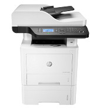
HP Laser MFP 432
Instalação em rede ou USB, contador de páginas e impressão com bandejas.
Verifique energia, USB ou rede antes de iniciar.
Abrir o instalador
Inicie o assistente da HP e aceite os termos de uso.
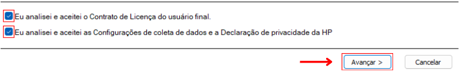
Escolher a conexão
Use USB para ligação direta ou rede para compartilhamento escolar.
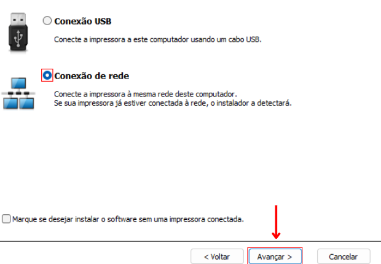
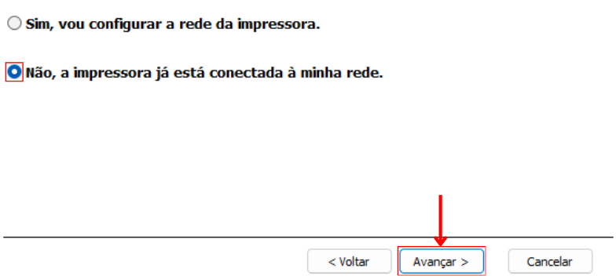
Selecionar a impressora
Escolha o equipamento encontrado pelo instalador.
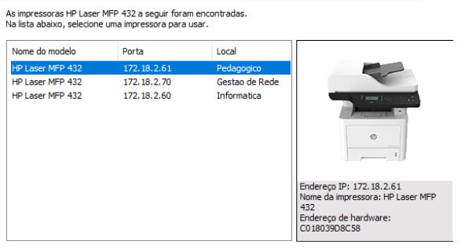
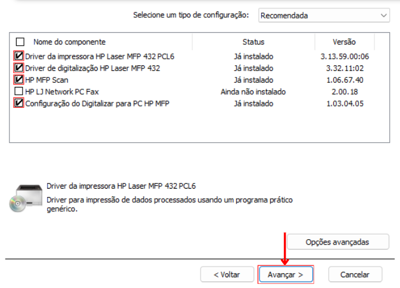
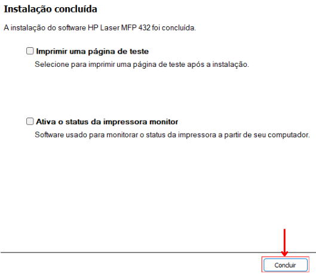
O contador pode ser emitido direto no painel da impressora.
Navegar até relatórios
Acesse o menu, abra Config. Sist. e depois Relatórios.
Imprimir o contador
Escolha Contador de Uso e confirme.
Selecionar a impressora
Use Ctrl + P e escolha a HP 432 no destino.


Abrir opções avançadas
Na impressão padrão ajuste páginas, papel A4 e abra a caixa de diálogo do sistema para mais opções.
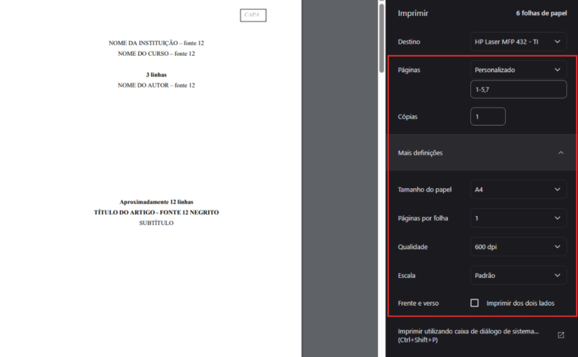
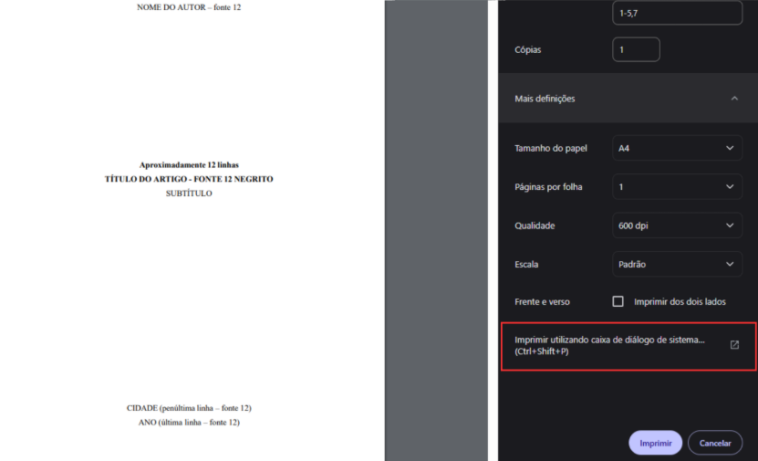
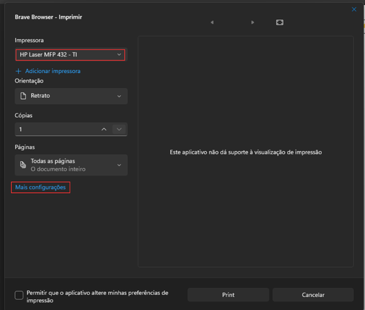
Layout, agrupamento e bandeja
Marque Agrupar para receber as cópias completas em ordem.
Ajuste orientação, páginas por folha, frente e verso e escolha da bandeja.
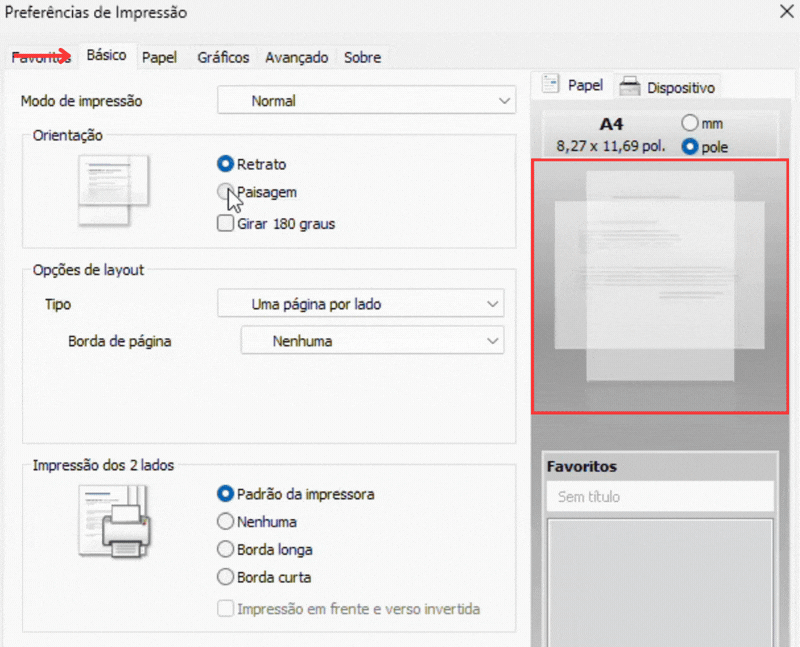
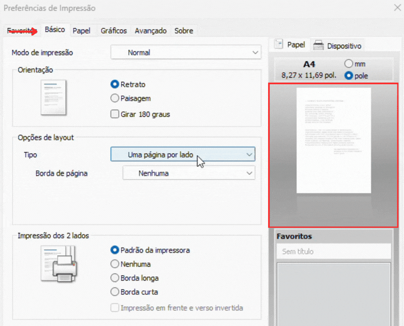
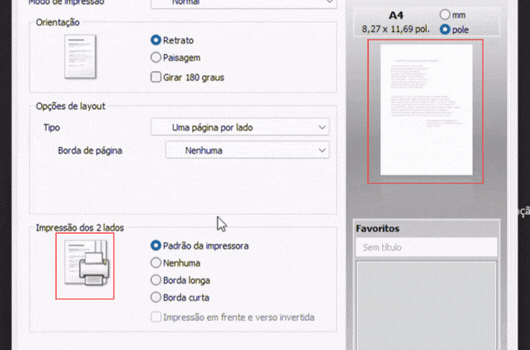
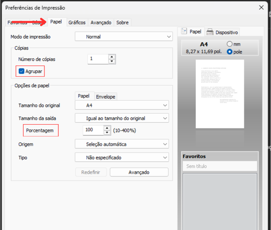
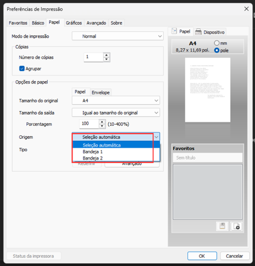
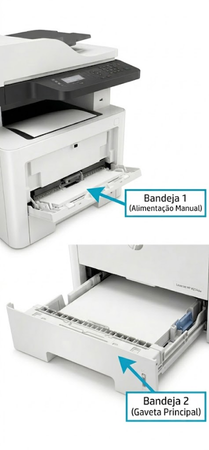
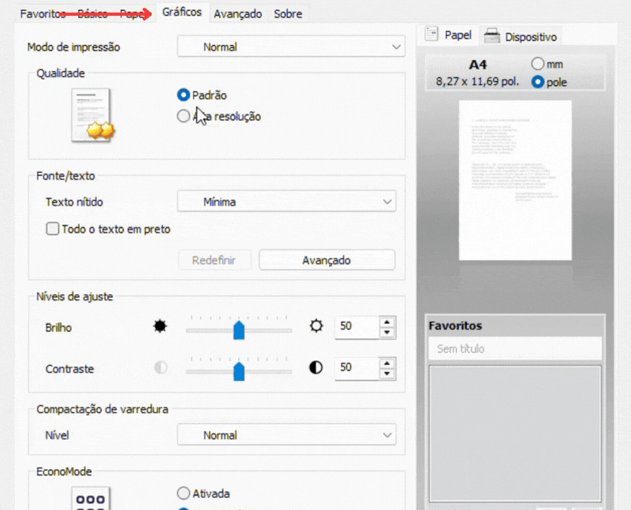
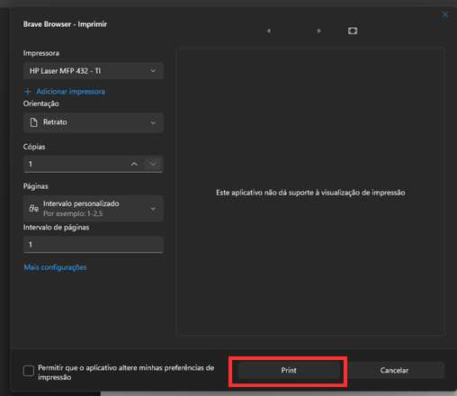